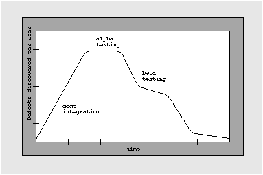

NEXTSTEP In Focus, Spring 1993 (Volume 3, Issue 2).
Copyright ©1993 by NeXT Computer, Inc. All Rights Reserved.
How We Tested NEXTSTEP for
Intel Processors
Jim Walsh
Testing NEXTSTEP for Intel Processors presented a unique situation for NeXT. While the software is in its third generation on NeXT's proprietary hardware, NEXTSTEP Release 3.1 is the initial release on Intel's line of microprocessors. Our goal was to have the same level of product maturity on Intel-based platforms as we have on hardware we designed and controlled. Fortunately, we were aided in this effort by the nature and design of NEXTSTEP itself.
FEW CHANGES TO USER-VISIBLE PARTS
The encapsulated, object-oriented design of the application layer of NEXTSTEP--the things you interact with every day, like Workspace Manager and Mail--made porting the user-visible portions of the environment simple and largely error-free. The user and developer applications that form a major portion of the NEXTSTEP code are almost entirely insulated from the underlying hardware by the NEXTSTEP Application KitTM and other NeXT software libraries.
In all, only 17% of the machine-dependent bugs discovered were problems in the application layer. Many of the reports we did receive in this area were about cosmetic things--such as key labels--that differ between NeXT hardware and some PCs.
Making the Application Kit general
In addition, because of their clean design, the Application Kit and NeXT libraries themselves were also relatively easy to port, though in places we had to make them more general to account for differences in hardware. For example, the objects in the Application Kit that interact with binary data such as fonts had to change to account for byte order dependencies, as did methods that manipulate bit fields. The generalizations we made make hardware differences transparent to applications--including ours--that run on top of the NeXT libraries.
As a further plus, we made these changes in such a way that we can build NEXTSTEP itself for all architectures simultaneously from a single program source tree. This consistency from platform to platform improves quality by cutting the potential for introducing errors when we integrate and build our code. It also simplifies testing because it guarantees identical software--and therefore identical (non-hardware) bugs--on all platforms.
Concentrating on the lowest level
In addition, the fact that we made few changes to most of the user-visible software minimized the errors that might have been introduced in modifying this code. We still tested all of our code on both platforms, using our normal testing methodology. However, because porting introduced relatively few bugs into the high-level functionality, we were free to concentrate extra effort on testing the low-level areas directly affected by the Intel port itself.
TESTING CHALLENGES
Some important challenges in testing NEXTSTEP for Intel-based processors arose from four factors:
| The radical increase in the number of types of hardware systems--and cards--to be supported | ||
| The need to co-exist with other popular operating systems capable of running on the same hardware | ||
| The need to ensure compatibility between NEXTSTEP systems running on both types of hardware, "black" and "white" | ||
| Our goal of making NEXTSTEP installation onto Intel-based hardware as easy as it is on our proprietary hardware |
In addition to shipping on two platform architectures, NEXTSTEP Release 3.1 is also shipping in six spoken languages, with on-line and printed documentation available in three languages. This further multiplied the test permutations required.
Selective support
To assure product quality on the new hardware architecture, we chose to provide support for a selected set of high-performance Intel-based PC hardware in the initial release. This strategy is preferable to trying to be compatible with every 486-based platform and card, which would have meant using only the features supported by the lowest common denominator equipment. Nonetheless, even though the strategy we chose permits us to test more thoroughly and provide better driver support for the hardware we select, we still had to test a daunting number of configurations.
To cope with this complexity, we adopted a three-pronged approach that involved creating test suites, grouping tests into "equivalence classes," and using additional spot testing.
Test suites
We developed test suites to exercise the major classes of devices supported by NEXTSTEP Release 3.1: systems, mass storage, serial and parallel I/O, printing, networking, graphics, sound, and keyboard and mouse inputs. These suites accessed the devices through their device drivers and at higher levels under NEXTSTEP, rather than addressing them at the hardware level.
This made the tests themselves portable from device to device, while still thoroughly exercising the devices' operation under NEXTSTEP. By using device drivers and NEXTSTEP to provide a portability layer for tests, we avoided crafting a specific test suite for each piece of hardware, and directly addressed the area of interest--the behavior of the devices under NEXTSTEP.
Test classes
We simplified our testing by partitioning our test set so that each device was tested thoroughly in distinct supported configurations, and lightly in equivalent configurations. For example, if the major variable affecting a particular ISA card's operation was the system bus architecture, we tested that card thoroughly on one ISA and one EISA system, and lightly on other ISA and EISA systems. This kept the number of test configurations under control, while still achieving substantial test coverage.
"Random" testing
To fill any remaining gaps in our hardware test coverage, we had a vigorous program of "random" testing consisting of extensive in-house use of early versions on a wide variety of hardware configurations, "bug hunts" on these configurations, and a pre-release program involving several hundred sites, selected in part for their diversity of hardware configurations. In all, 30% of the bugs reported against Release 3.1 were spotted by the pre-release sites, and roughly 4% were found through bug hunts.
Relatively low percentages like these for bugs reported by pre-release sites are good news, because they mean our internal test program has been effective at finding bugs before users do.
Making installation easy
We used a similar partitioning strategy to test installation of NEXTSTEP onto various hardware configurations. NEXTSTEP is easy to install on NeXT hardware, distinguishing it from most other operating systems on any platform. In part, this ease of installation is achieved through a combination of hardware, software, and manufacturing support.
On PC hardware, though, installation is a different story. Simply getting a fully-configured PC to boot under any operating system--whether it be NEXTSTEP or something else--can be a major undertaking, involving wrestling with IRQ lines, DIP-switch settings, and so on. Various industry initiatives are trying to address this endemic problem of the PC industry, but in the meantime NeXT would like to come as close as possible to the sort of turn-key product installation offered for NeXT hardware.
We have used our expertise in user interface design to make installing NEXTSTEP itself quite painless once your hardware is bootable. However, until your hardware can boot, it's of course impossible to run our software--or any other--on it. To get you to the point where your system can boot, we therefore have used non-software methods.
For extremely simple installation, we negotiated with several hardware vendors to have them ship systems that are pre-configured and pre-loaded with NEXTSTEP, removing the need for you to do any software installation. For systems that aren't preconfigured, we set up on-line documents that you can access by e-mail or phone, to give you the information you need to configure your hardware properly.
INTEROPERABILITY STRATEGIES
It required a significant amount of attention to test NEXTSTEP for Intel Processors for compatibility and interoperability with networking and file exchange standards, other popular PC-operating systems, and NEXTSTEP running on NeXT's proprietary hardware. Our testing addressed such areas as multi-OS booting, mounting 12- and 16-bit FAT DOS file systems, using various network transport layers, TCP/IP, NFS, SMTP compatibility, and Novell® support, among others.
Fortunately, much of the code to support these features was inherited from earlier versions of NEXTSTEP and so was already stable and well-characterized. The major areas of change were in the mechanics of making up for missing hardware support--such as a NeXTstation's ability to eject floppy disks under program control, or its Power key, which was similarly under program control. We also had to accommodate features that PCs have but NeXT computers don't, such as the ability to boot a different operating system from a different disk partition.
MEETING THE CHALLENGE
In all, from a quality standpoint, the port of NEXTSTEP to Intel Processors went very smoothly, especially for software of its size and sophistication. The major challenge from a testing standpoint was the volume of work needed to test support for a wide variety of new hardware and hardware configurations. We are meeting this challenge and moving forward in a variety of innovative ways, such as with our hardware certification program--which will be discussed in a future article!
Jim Walsh is NeXT's Software Quality Manager. You can reach him by e-mail at Jim_Walsh@next.com.
WHAT IS "AT LEAST AS GOOD AS 3.0"?
A good way to measure software quality is the software's defect discovery rate--how long someone can use it before finding a previously unknown bug. In addition to translating directly to reliability, this means of measuring has been shown to predict the number of unknown bugs still in the software.
The basic idea is that the more bugs you find in a given period of testing time, the "worse" the software is. (There are some subtleties, though; for example, very buggy software has a low defect discovery rate because it crashes so often you can't test it effectively.)
Ideally, one would like to know how many defects were discovered per unit of CPU time consumed--CPU time indicates how much the software has been used quite accurately. For an entire OS such as NEXTSTEP, however, this is a difficult quantity to measure. Instead, we use the number of bugs reported per user, per day.
The standard defect discovery rate curve looks like the graph below. There's a gradually increasing defect discovery rate, corresponding to the period when new code is integrated. The defect rate hits its peak during alpha testing, just before beta testing begins, and then falls to a plateau during beta as bugs get harder to find. Finally, it drops off to a fairly small value as most of the bugs that are going to be found are reported.
For NEXTSTEP Release 3.0, the defect discovery rate graph was nearly identical to the standard one. For Release 3.1, we're aiming for a defect discovery rate at or below the one we had for Release 3.0.
For more information on defect discovery rates, see "Determining Software Quality" in the April 1993 issue of Computer Language, pp. 57-65. Also see Software Reliability: Measurement, Prediction, Application by John D. Musa et al. (New York: McGraw-Hill Book Company, 1987.)--JW

Most defect discovery rate graphs have this characteristic shape.